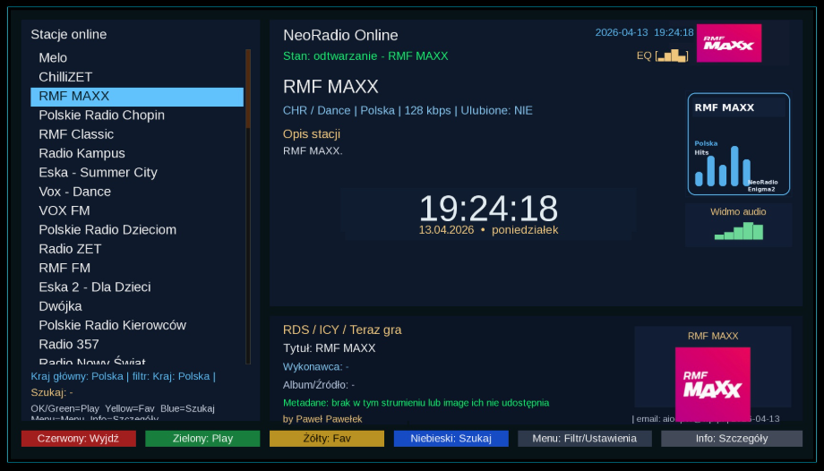

Tutaj znajdziesz komplet autorskich wtyczek Enigma2, skrócone opisy funkcji, kompatybilność i bezpośrednie pliki IPK.
Na górze masz szybki indeks i filtrowanie, żeby od razu przejść do właściwej pozycji.
Pobierasz moje projekty? Pokaż, że chcesz ich dalszy rozwój.
Wtyczki są dostępne od razu do pobrania, ale ich dalsze aktualizacje, testy i dokumentacja wymagają czasu. Jeśli AIO Panel, IPTV Dream albo pozostałe dodatki pomagają Ci na co dzień — wesprzyj rozwój projektów.
Wersja 11.1.2 rozwija linię 11.x i porządkuje funkcje dodane od milestone 11.0.
Najważniejsze zmiany to łatwiejszy dostęp do NeoRadio Online, nowy moduł ręcznego sprawdzania aktualizacji
oraz dopracowany mechanizm pobierania plików z GitHub z retry, cache i fallbackiem dla trudniejszych warunków sieciowych.
Co nowego w AIO Panel 11.1.2
Instalator NeoRadio Online — łatwiejszy dostęp do radia internetowego bez ręcznego szukania paczki.
Gotowość IPK — zaktualizowane pliki pakietu IPK przygotowują projekt do pełnej dystrybucji.
Protipy dla użytkowników
Po aktualizacji do 11.1.2 wykonaj pełny restart tunera, żeby domknąć zmiany architektury i odświeżyć komponenty GUI.
Jeśli aktualizujesz z dużo starszej wersji, najlepiej użyj najnowszej paczki IPK albo aktualizacji z poziomu wtyczki, aby pobrać komplet nowych plików.
Gdy serwer list kanałów chwilowo zwolni, spróbuj ponownie — nowe retry i cache pomagają, ale przy większych zmianach warto dać wtyczce chwilę na dokończenie pracy.
Po większej aktualizacji możesz profilaktycznie usunąć stare cache systemowe i ponownie uruchomić GUI.
Jak zaktualizować
Włącz AIO Panel.
Wtyczka może poinformować o dostępności wersji 11.1.2, a nowy moduł pozwala też sprawdzić aktualizację ręcznie.
Zatwierdź aktualizację albo pobierz paczkę IPK ręcznie z tej strony.
Po zakończeniu wykonaj pełny restart tunera, aby bezpiecznie wczytać nową strukturę plików i UI.
Historia: AIO Panel v10.0.3 — poprawki GUI, Tip dnia AIO i stabilniejsze instalatory
W wersji 10.0.3 uporządkowano serię 10.x, usunięto błąd modalny po zamknięciu Console,
dodano nowe okno Tip dnia AIO i zewnętrzny plik aio_tips.txt z parserem sekcji [PL]/[EN].
Naprawa błędu modalnego po Console.
Tip dnia AIO w nowym oknie z obsługą OK/EXIT, LEFT/RIGHT i UP/DOWN.
Lepsze skalowanie GUI i bezpieczniejsze pytanie o restart po instalacji.
Pełna zgodność Py2/Py3 i zachowanie bazowych nowości serii 10.x.
Historia: AIO Panel v9.3 — MyUpdater 5.1, picony transparent i okna HD
W wersji 9.3 dodano MyUpdater v5.1, poprawiono funkcję pobierania piconów transparent,
uporządkowano paczkę i dopasowano główne okna pod popularne skiny HD.
Dopasowano główne okna wtyczki do skinów HD i uporządkowano zawartość paczki.
Historia: AIO Panel v9.2 — VAVOO, widoczność w menu i poprawki Super Konfiguratora
W wersji 9.2 dodano m.in. instalator VAVOO (online), funkcję widoczności AIO Panel w menu tunera,
usprawniono Super Konfigurator oraz zmieniono sposób instalacji Softcam na skrypt (wget | bash) — działa także na obrazach bez Softcam w feed.
Dodano instalator VAVOO (online).
Widoczność AIO Panel w menu tunera: Menu → Ustawienia/System oraz Menu główne + naprawiono wykonanie akcji.
Przeniesiono funkcję widoczności do zakładki „Narzędzia Systemowe”.
Super Konfigurator: opcje DEPS/BASIC/FULL widoczne bezpośrednio w oknie wtyczki (bez dodatkowego wyboru).
Softcam: instalacja skryptem (wget | bash) — działa także na obrazach bez Softcam w feed.
Super Konfigurator FULL: poprawiona kolejność i stabilność (Lista Bzyk83 Hotbird 13E → Softcam (skrypt) → Oscam z feed (auto) → Picony Transparent → przeładowanie list → pełny restart).
UI/Tooltip: uzupełniono/brakujące opisy funkcji + dodano opis zapasowy (aby opis nie był pusty).
Historia: AIO Panel v9.1.1 — poprawki Py2 + stabilna konwersja tekstu w GUI
W wersji 9.1.1 wprowadzono poprawki dla środowisk Python 2 (m.in. OpenATV 6.4 / VTi),
gdzie występował losowy brak opisów/opcji w menu.
Naprawa Py2: eliminacja losowego braku opisów/opcji w menu (OpenATV 6.4 / VTi).
Konwersja typów tekstu w GUI: wymuszona poprawna konwersja w listach GUI
(Py2: str/UTF‑8 bytes, Py3: str) — koniec pozycji typu <not-a-string> i znikających nazw funkcji.
Dodane instalatory wtyczek (w panelu): ChocholousekPicons, CIEFP Oscam Editor, FilmXY, FootOnsat, e‑stralker (z feedu).
Aktualizację możesz przeprowadzić na trzy sposoby:
Niebieski przycisk: bezpośrednio w menu wtyczki.
Polecenie Telnet/SSH: poprzez konsolę systemową.
Plik IPK: ręczna instalacja z paczki.
Kluczowe nowości i zmiany (v9.0)
NOWOŚĆ: Skins / Skórki: nowa zakładka z instalatorami skinów — zarządzanie wyglądem systemu bezpośrednio z panelu.
Nowy interfejs Dashboard: przebudowa na układ Sidebar + Content z kolorystyką cyber-blue.
Podział na sekcje: Listy Kanałów, Softcamy, Wtyczki Online, Konfigurator, Narzędzia Systemowe, Backup & Restore, Informacje i Aktualizacja, Diagnostyka, Czyszczenie i Bezpieczeństwo.
Zmiana w NCam: instalacja z feedu systemu (opkg) — dostęp do najnowszej wersji na danym obrazie.
Poprawki UI: ujednolicony wygląd sekcji oraz usunięcie błędu „podwójnego zaznaczenia” — aktywna jest tylko jedna kolumna.
Wsparcie techniczne: kod QR wsparcia w nagłówku + ekran wsparcia w sekcji INFO z funkcją powiększenia (zoom).
Stabilność: poprawiona kompatybilność między środowiskami Py2 i Py3 oraz zoptymalizowane wykonywanie komend systemowych.
IPTV Dream v6.5.1 (Enigma2)
✅ M3U / Xtream Codes / MAC Portal • GUI + WebIF
Data wydania: 28.03.2026 • aktualizacja z poziomu wtyczki (zielony przycisk) • po instalacji wymagany Restart GUI.
IPTV Dream v6.5.1 pozwala wczytać listy IPTV (M3U URL/plik, Xtream Codes, MAC Portal),
a następnie wyeksportować kanały do bukietów Enigma2, zainstalować źródła EPG (EPGImport) i pobrać/generować pikony.
Ma też wygodny WebIF, dzięki któremu dane możesz wkleić z telefonu albo PC zamiast wpisywać pilotem.
Najważniejsze zmiany (v6.5.1)
Inteligentna normalizacja adresów MAC — obsługa formatów z dwukropkami, myślnikami, kropkami, spacjami oraz surowego ciągu 12 znaków, z automatyczną konwersją do formatu kanonicznego.
Walidacja przed handshake — host i MAC są sprawdzane jeszcze przed próbą połączenia.
Status weryfikacji: paczka została przebudowana poprawnie. Wszystkie pliki .py pomyślnie przeszły kompilację składniową, a finalny build nie zawiera zbędnych plików tymczasowych.
Skróty (pilot) — najważniejsze
1–9 / OK — wybór pozycji menu
Czerwony — wyjście
Zielony — sprawdź aktualizacje
Żółty — instaluj źródła EPG Import
Niebieski — eksport do bukietu
Galeria
Kliknij miniaturę, aby otworzyć podgląd w pełnym rozmiarze.
📖 Pełna instrukcja użytkownika + opis funkcji (kliknij)
1) Do czego służy IPTV Dream v6.5.1
wczytanie listy IPTV z: M3U (URL), M3U (plik), Xtream Codes, MAC Portal (Stalker/MAG)
szybki eksport kanałów do bukietów Enigma2 (standardowa lista TV)
instalacja i przygotowanie źródeł EPG dla EPGImport
pobieranie i generowanie piconów
funkcje pomocnicze: ulubione, cache/historia, logi/debug, język PL/EN, aktualizacje
WebIF: wpisywanie danych z komputera/telefonu
2) Wymagania
Enigma2 + internet
zalecane: EPGImport (z feedu, jeśli nie jest w systemie)
LAN (jeśli używasz WebIF)
3) Instalacja
Menu → Ustawienia → Zarządzanie oprogramowaniem → Instaluj lokalny pakiet (plik w /tmp)
Bezpieczeństwo: WebIF działa po HTTP bez logowania — używaj wyłącznie w sieci domowej i wyłącz, gdy nie jest potrzebny.

NeoRadio 1.3.3 (Enigma2)
✅ Nowy autorski projekt • Enigma2 • stale rozwijany
Lekka wtyczka radiowa • RDS / ICY / Teraz gra • PL / EN • gotowa paczka instalacyjna .ipk
NeoRadio 1.3.3 – odświeżone centrum radiowe dla Enigma2 z czytelnymi metadanymi RDS / ICY / Teraz gra i nowym układem ekranu.
NeoRadio to mój nowy autorski projekt — lekka i niezwykle praktyczna wtyczka dla tunerów z systemem Enigma2, która zmienia sposób słuchania radia. Zamiast ciężkich i topornych odtwarzaczy dostajesz nowoczesny interfejs, dużą bazę stacji oraz funkcje, które realnie poprawiają codzienne korzystanie z tunera.
NeoRadio 1.3.3 już gotowe: więcej informacji ze stacji, lepszy wygląd i wygodniejsze korzystanie z wtyczki.
Co nowego w NeoRadio 1.3.3
Przebudowane pobieranie metadanych stacji — stabilniejsze odczytywanie informacji dostarczanych przez stream.
RDS / ICY / Teraz gra — obsługa informacji o aktualnym odtwarzaniu, audycji, opisie i danych stacji.
Lepsze wykrywanie danych — dokładniejsze rozpoznawanie tytułu, wykonawcy, audycji i opisu streamu.
Nowy wygląd — bardziej atrakcyjny, czytelny interfejs z poprawionym układem ekranu.
Uporządkowany dolny panel informacji — ważne dane są dostępne w logicznym, wygodnym miejscu.
Poprawki błędów i stabilności — wydanie dopracowane pod codzienne korzystanie na Enigma2.
Dane techniczne i personalizacja
Format: paczka .ipk do klasycznej instalacji lokalnej albo przez komendę FTP / terminal.
Własne listy: obsługa plików .m3u, .pls, .asx oraz własnych stacji w pliku /etc/enigma2/neoradio_user_stations.json.
Aktualizacje: możliwość aktualizacji wtyczki bezpośrednio z menu NeoRadio — szybko i bezproblemowo.
Zastosowanie: lekkie centrum radiowe dla Enigma2, gotowe zarówno do codziennego słuchania, jak i dalszych testów rozwojowych.
Instalacja
Klasycznie: pobierz paczkę .ipk, wgraj ją do /tmp i zainstaluj z poziomu tunera lub przez opkg.
FTP / terminal: poniższe polecenie pobiera najnowsze wydanie z GitHub i instaluje je automatycznie.
Projekt jest stale rozwijany na bazie Waszych opinii. Masz pomysł na nową funkcję, znalazłeś błąd albo chcesz podzielić się opinią? Napisz komentarz lub wyślij e-mail na: aio-iptv@wp.pl.
Autorskie spolszczenie • Autor spolszczenia: Paweł Pawełek • gotowa paczka instalacyjna .ipk
DreamosatX Signal 2.0 – Wydanie PL — spolszczony interfejs monitoringu sygnału.
DreamosatX Signal 2.0 – Wydanie PL to autorskie spolszczenie zaawansowanej wtyczki dla użytkowników DreamOS i Enigma2. To nie był zwykły przekład plików językowych — wtyczka nie miała standardowego systemu locale, dlatego prace wymagały wejścia bezpośrednio w jej strukturę oraz edycji osadzonych elementów interfejsu.
Co dokładnie zostało wykonane
Rozpakowanie i dekompilacja: rozbicie paczki .ipk i dekompilacja zaszytych plików Pythona.
Edycja kodu źródłowego: podmiana większości komunikatów i etykiet interfejsu na język polski bezpośrednio w skryptach.
Zakres spolszczenia: główny interfejs, ekrany AI, lista transponderów, sterowanie silnikiem oraz komunikaty eksportu.
Nowa paczka: ponowne złożenie całości do gotowego, czystego pliku instalacyjnego .ipk.
Uwagi techniczne: ze względu na metodę edycji niektóre głębokie logi techniczne lub komunikaty debugowania mogą nadal pojawiać się po angielsku albo turecku. Nie wpływa to jednak na komfort codziennej obsługi wtyczki.
Dlaczego warto zainstalować DreamosatX Signal 2.0
Precyzyjne pomiary: monitoring SNR, AGC oraz krytycznego dla stabilności obrazu BER w czasie rzeczywistym.
Pełna kontrola obrotnicy: zaawansowane wsparcie dla DiSEqC 1.2 oraz USALS z możliwością przesuwania anteny i zapisu pozycji.
Analiza transponderów: szybka diagnoza aktywnych częstotliwości i łatwiejsze wykrywanie „dziur” w zasięgu.
Szybka diagnoza: moduł analizy interpretuje dane za użytkownika i skraca czas ustawiania anteny.
Zastosowanie dla DX: przydatne narzędzie dla zaawansowanych użytkowników i posiadaczy obrotnic.
Kompatybilność
Wtyczka działa na systemie DreamOS oraz większości obrazów Enigma2, w tym na tunerach Dreambox, Vu+, Octagon, Zgemma i Gigablue.
Instrukcja instalacji
Wgraj przygotowany plik .ipk do folderu /tmp na swoim tunerze.
Zainstaluj go jak zwykłą wtyczkę: z poziomu menu tunera lub komendą opkg install /tmp/*.ipk.
Po instalacji koniecznie wykonaj restart GUI / Enigmy2, aby zmiany zostały wczytane.
Nagrania On Demand porządkuje listę nagrań i multimediów w Enigma2: ukrywa pliki techniczne
(.meta, .eit, .sc itd.), scala nagrania podzielone na części
(*.ts.001, *.ts.002…) i pokazuje prawdziwe tytuły odczytane z pliku .meta.
Najważniejsze funkcje
Inteligentna lista: 1 pozycja = 1 film (bez „śmietnika” technicznego).
Scalanie nagrań: odtwarzanie ciągiem nagrań podzielonych na części.
Prawdziwe nazwy: tytuł z .meta (jeśli istnieje), zamiast surowej nazwy pliku.
Obsługiwane formaty:.ts, .mkv, .mp4, .avi oraz audio (.mp3, .flac, .wav i inne).
Nowości w wersji 2.0 (09.01.2026)
Poniżej zestaw zmian i ulepszeń względem wersji 1.0.4 — dodane funkcje nagrywania i timery są realizowane możliwie „systemowo”, z fallbackami dla różnych image (OpenATV, OpenPLi i inne).
Integracja z nagrywaniem systemowym (maksymalna kompatybilność): „Nagraj teraz” uruchamiane przez mechanizmy systemowe (InfoBar/REC), z fallbackami dla różnych dystrybucji.
IPTV + SAT: nagrywanie bieżącego kanału działa również dla kanałów IPTV z list/bukietów (w zakresie dopuszczonym przez dany system); timery mogą być tworzone dla usług z bukietów, w tym IPTV.
EPG (systemowe): otwieranie „Pełnego EPG” i „EPG bieżącego kanału” w sposób możliwie systemowy, z fallbackami do dostępnych ekranów EPG (GraphMultiEPG / MultiEPG / EPGSelection).
Dodaj timer ręcznie — naprawa crasha: usunięto green screen wynikający z różnic w wymaganych argumentach TimerEntry; wprowadzono stabilną ścieżkę: InfoBar/TimerEditList → fallback do TimerEntry z poprawnie utworzonym obiektem timera.
Stabilność i zgodność: odporność na brakujące metody/klasy w zależności od dystrybucji (różnice nazw metod, dostępność ekranów).
Język / tłumaczenie PL/EN: pełne napisy PL/EN zależne od języka ustawionego w systemie (Polski → PL, inny → EN) + uporządkowane teksty pod kątem poprawnego wyświetlania znaków.
Gdzie wtyczka szuka plików
AUTO: skanuje typowe lokalizacje nagrań (np. /media/hdd/movie) oraz nośniki w /media i /mnt.
RĘCZNY: możesz wskazać dowolny folder (opcja pod Żółtym przyciskiem).
Sterowanie pilotem
OK — odtwórz
STOP — zatrzymaj / powrót
Czerwony — usuń (z potwierdzeniem; usuwa też pliki towarzyszące)
OpenCamView umożliwia podgląd kamer IP w Enigma2 po RTSP bez przerabiania list kanałów.
Kamery dodajesz i edytujesz wprost z GUI (nazwa, IP, port, login, hasło, ścieżka RTSP), a podgląd uruchamiasz jednym kliknięciem.
Najważniejsze funkcje
Dodawanie / edycja / usuwanie kamer z poziomu wtyczki.
OK — szybki podgląd wybranej kamery.
INFO / EPG / HELP — tryb MultiView (TV + podgląd kamery w PiP).
Skróty numeryczne 0–4 (m.in. Domofon/Intercom, eksport, pomoc).
Eksport kamer do bukietu Enigma2 (usługi 4097) oraz eksport do pliku M3U.
Wbudowany skaner sieci do szybkiego wyszukiwania kamer w LAN.
Sterowanie pilotem
OK — odtwórz kamerę
Zielony — dodaj kamerę
Żółty — edytuj kamerę
Czerwony — usuń kamerę
Niebieski — skaner sieci
INFO / EPG / HELP — MultiView (TV + PiP)
0 — ustaw wybraną kamerę jako Domofon/Intercom
1 — otwórz Domofon/Intercom
2 — eksport do bukietu
3 — eksport do M3U
4 — pomoc
EXIT — wyjście
Galeria
Kliknij miniaturę, aby otworzyć podgląd w pełnym rozmiarze.
Wskazówka: jeżeli kamera nie odtwarza się, sprawdź poprawność RTSP (IP/port/ścieżka) i dostępność strumienia w sieci LAN.
Pozostałe wtyczki
Szybkie opisy mniejszych paczek
Te pozycje nie wymagają długich opisów, ale są ważne i dostępne do pobrania od razu.
Picon Updater 1.2
Pobiera i aktualizuje pikony z GitHub. Przydatne, gdy chcesz szybko ujednolicić oprawę kanałów.